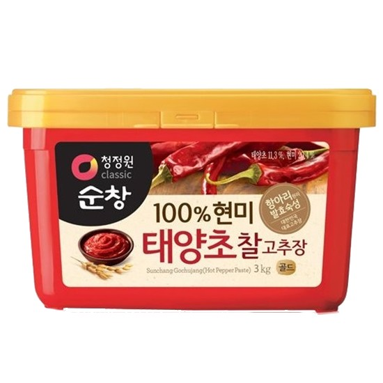

My recipe webpage
Seojun`s Special Tteokbokki Recipe

You will love tteokbokki once you try this dish~
Tteokbokki is Korean people’s most loved street food + snack.
The basic ingredient of this dish is rice cake and seasoned with red pepper paste.
Ingredients(2 servings)

Rice cake(400g)

Square fish cake(Three sheets)

Green onion(1)

4 table spoons of red pepper paste

2 table spoons of soy sauce
2 table spoons of rice taffy
1/2 table spoon of minced garlic
Water(720ml)
2 table spoons of sugar
3 table spoons of red pepper powder
Directions
1. Cut the green onion in half lengthwise and cut into 10cm long pieces.
2. Cut the square fish cake into 3*5cm pieces.
3. Blanch the rice cake briefly in boiling water.
4. Add seasoning ingredients to the pan and boil.
5. Add the rice cake and fish cake and simmer until the soup thickens.
6. Add green onions and boil for a while to finish.